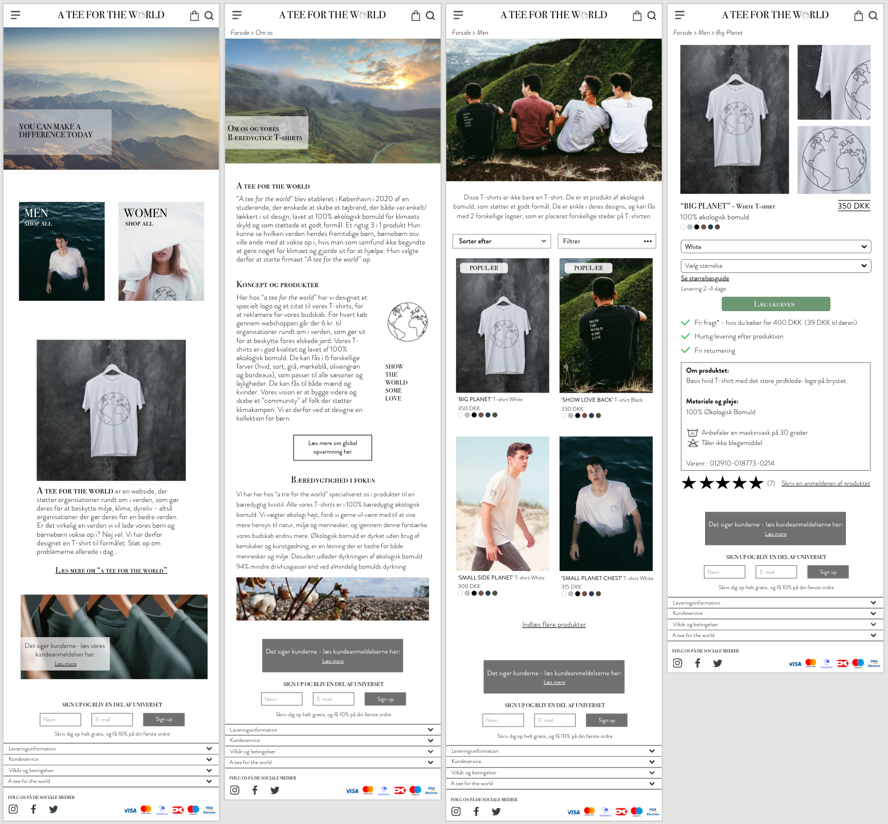

Grundlæggende UX
Opgave 03.02.01
I temaet "Grundlæggende UX" skulle vi udvikle en prototype af et website der sælger t-shirts. Forløbet blev inddelt i 1. Research og idé, 2. Prototype og 3. Test og Pitch. I Research og Pitch blev vi introduceret til testmetoden 'Research', herunder 'Desk research', 'Obervations research', 'Interview research' og 'Survey research', som alle blev brugt i udarbejdelesen af indholdet til sitet.
